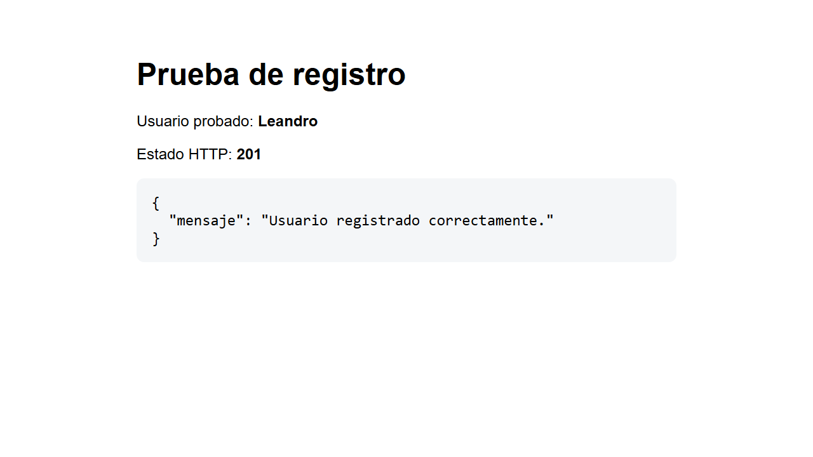
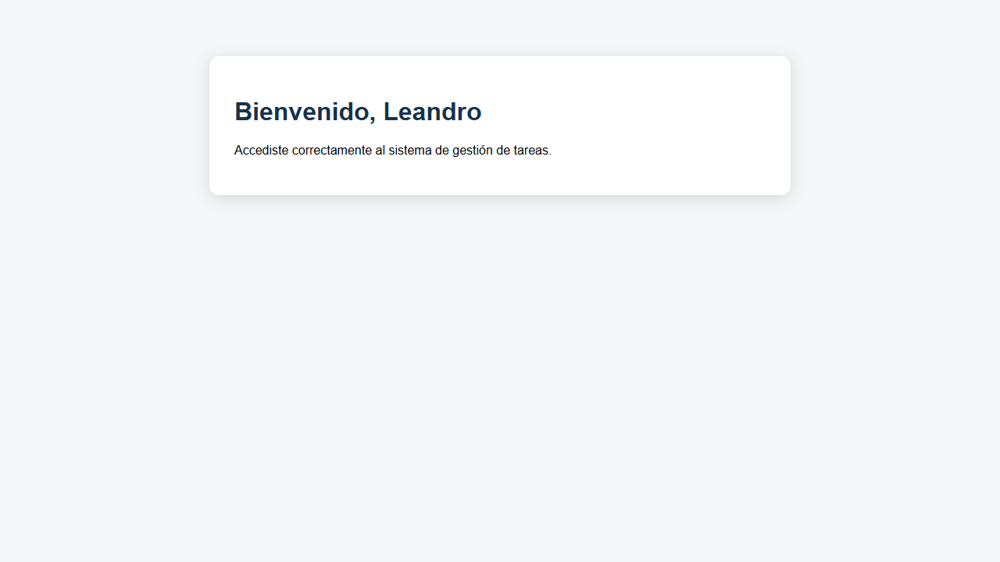

Descripción
El proyecto permite registrar usuarios, iniciar sesión y acceder a una página protegida. Las contraseñas se guardan como hashes y los datos se almacenan en una base SQLite.
Endpoints
| Método | Ruta | Descripción |
|---|---|---|
POST |
/registro |
Registra un usuario nuevo. |
POST |
/login |
Verifica las credenciales e inicia la sesión. |
GET |
/tareas |
Muestra la bienvenida al usuario autenticado. |
POST |
/logout |
Cierra la sesión. |
Formato de registro y login
{
"usuario": "Leandro",
"contraseña": "1234"
}Pruebas realizadas
Se comprobó el registro y el acceso a la ruta protegida.


Ejecución local
- Instalar las dependencias:
py -m pip install -r requirements.txt - Iniciar el servidor:
py servidor.py - Abrir otra terminal y ejecutar:
py cliente.py
GitHub Pages muestra esta documentación. El servidor Flask se ejecuta de forma local.